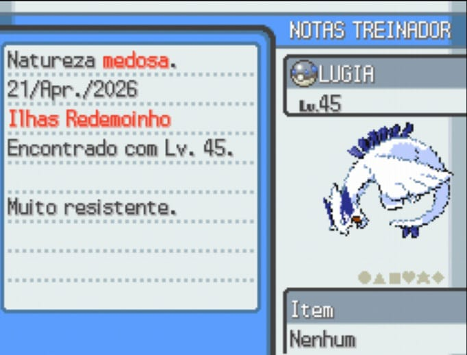

Pokémon lendário, capturado no LV. 45 nas Ilhas Redemoinho, após superar o labirinto de cavernas da ilha e conclusão da quest da Asa Prateada. Pokémon foi invocado no centro da caverna que era protegida pelas Garotas de Kimono.
Pokémon do tipo voador e psíquico.